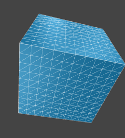

Uniforms
Assignment Goals:
- Learn how to pass data to shaders
Instructions for you to follow in this document will be highlighted in blue.
Don't forget to cite your sources!
Animation
GLSL has three types of variables:
- uniforms: variables which are passed by THREE.js to the shader which are the same for all invocations of that shader.
- attributes: variables which are passed by THREE.js (as we did in the procedural geometry assignment), which are associated to each vertex.
- varyings: variables which are passed from the vertex shader to the fragment shader (and which get interpolated along each triangle along the way).
Uniforms allow us to pass data to the shader, such as the value of a slider, the current time, or textures.
Complete the Following:
- Starting with your submission for the shader assignment, modify your shader back to a simple red=u, green=v "mango" texture.
- Add
<input type="range" min=0 max=1 step=.01 id="slider"> to the body of your webpage
- Elevate
shader_material to the global scope by adding var shader_material to the global scope and getting rid of the var in var shader_material = new THREE.ShaderMaterial... in your create_scene function.
- Add
uniforms: {slider:{value:0}} as an option for your shader_material This creates a new uniform called slider (with the value of 0) that your shaders can access.
- Add the following to your animate function:
shader_material.uniforms.slider.value = Number(document.getElementById("slider").value);
shader_material.uniformsNeedUpdate = true;
- Add
uniform float slider; to your fragment shader code
- When you set gl_FragColor in your fragment shader, set blue to slider.
The slider should now let you adjust the blueness of the objects in the scene.
Try out the following formulas for gl_FragColor to see what the slider does to them:
-
gl_FragColor = vec4(uvpass + slider * vec2(3.0,4.0), 0.0, 1.0);
-
gl_FragColor = vec4(fract(uvpass + slider * vec2(3.0,4.0)), 0.0, 1.0); note that fract is a function which returns the fractional part of a number (frac(3.14) = 0.14), so this makes sure the output wraps around from 1 back to 0 and stays between 1 and 0.
-
float surfx = 10.0*uvpass.x-5.0;
float surfy = 10.0*uvpass.y-5.0;
if (abs(sin(surfx+10.0*slider)-surfy) < 0.1) {
gl_FragColor = vec4(0,1,0,1);
}
else {
gl_FragColor = vec4(0,0,1,1);
}
-
float surfx = 10.0*uvpass.x-5.0;
float surfy = 10.0*uvpass.y-5.0;
if (abs(sin(surfx)-surfy) < slider) {
gl_FragColor = vec4(0,1,0,1);
}
else {
gl_FragColor = vec4(0,0,1,1);
}
A common technique in computer graphics is to adjust values using a slider to determine what value looks best, then hardcoding it.
Animation
You can make these values animate by sending the current time to the shader. Note that Date.now() is too large to send to the shader.
In your animate function in your javascript, set shader_material.uniforms.slider.value = (Date.now()/5000)%1;
The GPU is perfectly happy to show rapidly flickering brightly colored images. Be careful to avoid doing this!
An important consideration with shaders is when to do a particular calculation:
- Before the shader: gets executed on the CPU, once per frame (or just once)
- In the vertex shader: gets executed on the GPU, once per vertex per frame
- In the fragment shader: gets executed on the GPU, once per pixel per face per frame
It's usually best to do a calculation as high on this list as possible to avoid redundancy
Textures
A major type of uniform is textures. While textures usually specify the color of pixels on surfaces, they can be used to store any two-dimensional array of vectors.
Complete the Following:
- Change the box in your scene to
new THREE.BoxGeometry(5,5,5); to make it larger.
- Add to your
create_scene function var brick_texture = new THREE.TextureLoader().load("https://trkern.github.io/bricks07-1k/bricks07%20diffuse%201k.jpg"); This creates a texture for THREE.js to use. You could set it to be a texture directly by using a material like new THREE.MeshBasicMaterial({map: brick_texture});, but we will be doing this with shaders to learn how to work with textures in shaders.
- Update your shader_material's uniforms to include our texture:
uniforms: {
slider:{value:0},
brick:{value:brick_texture},
}
- Add
uniform sampler2D brick; to the top of your fragment shader. You now have access to the full brick texture image at the fragment shader stage.
- In your
main() function of your fragment shader, add gl_FragColor = texture(brick, uvpass);. texture is a function that reads a position into the texture.
An essential feature of shaders is that if your code compiles, it will not crash, so what happens if you feed coordinates that are too large, too small, or have decimal parts to them into the texture function?
- If the values are too large or too small, texture defaults to the color of the nearest pixel with valid coordinates. You can change this behavior by modifying the brick_texture object. See the THREE.js documentation for more details.
- We're already passing values into our texture function that have decimal parts! How the texture function handles these depends on the .magFilter and .minFilter options of our brick_texture object. By default, it uses bilinear interpolation.
- Computerphile has a video about bilinear interpolation.
- I've made a video about how bilinear interpolation creates hyperbolas in video games.
Complete the Following:
- See what happens if you sample values too large with
gl_FragColor = texture(brick,4.0*uvpass);. This multiplies our uv values to go from 0 to 4 and texture expects u and v values between 0 and 1.
- You can bring these values back into the range 0 to 1 with the fract function (that returns the decimal part of a number). See what happens when you set
gl_FragColor = texture(brick,fract(4.0*uvpass));. Note that fract, like many built-in functions, acts on each coordinate when fed a vector.
- Set
gl_FragColor = texture(brick,uvpass);. In your create_scene function, set:
brick_texture.magFilter = THREE.NearestFilter;
brick_texture.minFilter = THREE.NearestFilter;
Compare what happens when you zoom in on the texture now with nearest-neighbor filtering versus the default bilinear filtering. Can you think of a video game that uses nearest-neighbor texture filtering?
You may have heard of trilinear filtering: this combines bilinear filtering with an additional linear interpolation between different scale versions of a texture. These scaled versions of the image are precomputed to save time. You can see an example of a texture file with scaled versions included here.
Vertex Transformation
Our vertex shaders also can have access to our uniforms, and we can use them to transform the resulting locations of various vertices.
Complete the Following:
- Change the box in your javascript to
new THREE.BoxGeometry(5,5,5,64,64,64);. This breaks each side of the box into lots of tiny different squares so we can adjust all of those squares' positions separately. Essentially, the result looks like:

Except with more subdivisions (64 in each direction, so each face has 64x64 boxes).
- Add
var brick_height = new THREE.TextureLoader().load("https://trkern.github.io/bricks07-1k/bricks07%20height%201k.jpg"); to your scene and brickheight: {value:brick_height} to your uniforms.
The brick height map (shown below) is a grayscale image where the intensity of each pixel represents the height of that pixel.

- Add
uniform sampler2D brickheight; to the global scope of your vertex shader.
- Add
float highness = texture(brickheight,uv).x;
vec3 newposition = position + 0.2*highness * normal;
to your main() function in your vertex shader, and replace position with newposition in your assignment to gl_Position.
You can adjust the quality of the height mapped geometry by changing the number of subdivisions of each side of the box from 64. More subdivisions will mean more points to sample from the hight map texture, so higher quality, but slower. Fewer subdivisions will be lower quality but faster.
Bonus: Parallax Transformations
This section is optional.
A common use of shaders is to produce holographic materials: materials that look different depending on the direction you look at them from. This can lead to a cheap 3d effect that requires no extra geometry, which skilled artists can make look good.
Complete the Following:
- In your vertex shader, reset:
gl_Position = projectionMatrix * viewMatrix * modelMatrix * vec4(position,1.0);
- Use a varying vec3 called normpass to send
normpass = (viewMatrix*modelMatrix*vec4(normal,0.0)).xyz from the vertex shader to the fragment shader. This is the normal vector from the perspective of the camera.
- In the main() function of your fragment shader, calculate
float highness = (texture2D(brickheight, uvpass).x-0.7);
- Then calculate
gl_FragColor = texture2D(brick,uvpass - 0.1*highness*normpass.xy);. This offsets the coordinates we sample our texture from based on the height of the pixel and the normal direction from the camera to produce a 3d effect. You can see a simpler version of normal displacement in this video by Jasper.
Parallax transformation is used heavily in video games like Dark Souls 2, and is a predecessor of many more advanced effects that use a vertex shader to produce a 3d effect. You can see a modern version of this effect used to make windows look like they have interiors in this video by Game Dev Guide.
{kind=link}